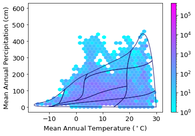

Density of observations/plots in climate space
Contents
Density of observations/plots in climate space#
We want to determine the distribution and density of the iNaturalist observations and the sPlotOpen vegetation plots in climate space, specifically temperature / percipitation space.
This section covers:
Extract temperature and percipitation data from WorldClim
Plotting density in climate space
import pandas as pd
import numpy as np
import os
import matplotlib.pyplot as plt
import seaborn as sns
from matplotlib.colors import LogNorm, Normalize
import cartopy.crs as ccrs
from matplotlib.colors import BoundaryNorm
from matplotlib.ticker import MaxNLocator
import rasterio as rio
from rasterio.plot import show
import geopandas as gpd
# open files
sPlot = pd.read_csv("sPlotOpen/cwm_loc.csv")
# open file with all iNaturalist observations and trait values
iNat = pd.read_csv("iNat_TRY_log.csv")
Convert to geodataframe, so that we can work with the geopandas geometry:
geo_iNat = gpd.GeoDataFrame( iNat.iloc[:,:22], geometry=gpd.points_from_xy(iNat.decimalLongitude, iNat.decimalLatitude),
crs='epsg:4326')
geo_sPlot = gpd.GeoDataFrame(sPlot, geometry=gpd.points_from_xy(sPlot.Longitude, sPlot.Latitude), crs='epsg:4326')
Extract temperature and percipitation data from WorldClim#
# Open the raster of temperature and percipitation information
perc = rio.open('WorldClim/wc2.1_2.5m_bio_12.tif')
temp = rio.open('WorldClim/wc2.1_2.5m_bio_1.tif')
#https://gis.stackexchange.com/questions/317391/python-extract-raster-values-at-point-locations
# Read points from shapefile
clim_sPlot = geo_sPlot
clim_sPlot = clim_sPlot[['Longitude', 'Latitude','PlotObservationID','geometry']]
clim_sPlot.index = range(len(clim_sPlot))
coords = [(x,y) for x, y in zip(clim_sPlot.Longitude, clim_sPlot.Latitude)]
# Sample the raster at every point location and store values in DataFrame
clim_sPlot['Perc'] = [x[0] for x in perc.sample(coords)]
clim_sPlot['Temp'] = [x[0] for x in temp.sample(coords)]
# about 15 min
# Read points from shapefile
clim_iNat = iNat[['decimalLongitude', 'decimalLatitude','scientificName', 'eventDate']]
clim_iNat = clim_iNat[clim_iNat['decimalLongitude'].notna()]
clim_iNat = clim_iNat[clim_iNat['decimalLatitude'].notna()]
clim_iNat.index = range(len(clim_iNat))
coords = [(x,y) for x, y in zip(clim_iNat.decimalLongitude, clim_iNat.decimalLatitude)]
# Sample the raster at every point location and store values in DataFrame
clim_iNat['Perc'] = [x[0] for x in perc.sample(coords)]
clim_iNat['Temp'] = [x[0] for x in temp.sample(coords)]
Save climate data#
clim_iNat.to_csv("iNat_climate_variables.csv", index=False)
clim_sPlot.to_csv("sPlot_climate_variables.csv", index=False)
Plot in climate space#
# open files
clim_sPlot = pd.read_csv("sPlot_climate_variables.csv")
clim_iNat = pd.read_csv("iNat_climate_variables.csv")
# read Whittaker coordinates
# data taken from R package "plotbiomes": https://github.com/valentinitnelav/plotbiomes
Whittaker = pd.read_csv("Whittaker_biomes.csv")
Whittaker.head()
| temp_c | precp_cm | biome_id | biome | |
|---|---|---|---|---|
| 0 | -10.216002 | 1.607134 | 6 | Tundra |
| 1 | -10.628573 | 1.696938 | 6 | Tundra |
| 2 | -11.141165 | 1.846052 | 6 | Tundra |
| 3 | -11.617762 | 2.028094 | 6 | Tundra |
| 4 | -12.059605 | 2.242129 | 6 | Tundra |
# change mm to cm
clim_iNat['Perc'] = clim_iNat['Perc'].div(10)
clim_sPlot['Perc'] = clim_sPlot['Perc'].div(10)
clim_sPlot
| Longitude | Latitude | PlotObservationID | geometry | Perc | Temp | |
|---|---|---|---|---|---|---|
| 0 | -154.180000 | 62.420000 | 16 | POINT (-154.18 62.42) | 42.8 | -2.578834 |
| 1 | -154.180000 | 62.420000 | 17 | POINT (-154.18 62.42) | 42.8 | -2.578834 |
| 2 | -154.180000 | 62.420000 | 18 | POINT (-154.18 62.42) | 42.8 | -2.578834 |
| 3 | -154.180000 | 62.420000 | 20 | POINT (-154.18 62.42) | 42.8 | -2.578834 |
| 4 | -154.180000 | 62.420000 | 22 | POINT (-154.18 62.42) | 42.8 | -2.578834 |
| ... | ... | ... | ... | ... | ... | ... |
| 95099 | 27.273862 | 56.287870 | 1126749 | POINT (27.273862 56.28787) | 62.0 | 5.296333 |
| 95100 | 23.598014 | 56.939965 | 1126761 | POINT (23.598014 56.939965) | 61.7 | 6.614500 |
| 95101 | 23.598014 | 56.939965 | 1126769 | POINT (23.598014 56.939965) | 61.7 | 6.614500 |
| 95102 | 22.147667 | 57.248222 | 1126774 | POINT (22.147667 57.248222) | 66.8 | 6.546000 |
| 95103 | 26.892074 | 57.563967 | 1126790 | POINT (26.892074 57.563967) | 69.2 | 4.963833 |
95104 rows × 6 columns
for b in Whittaker['biome_id'].unique():
subplot = Whittaker[Whittaker['biome_id']==b]
plt.plot(subplot['temp_c'], subplot['precp_cm'], '-')
plt.text(subplot["temp_c"].mean(),subplot["precp_cm"].mean(),s=str(subplot["biome"].unique()))

Plot sPlotOpen in climate space:
plt.rcParams.update({'font.size': 13})
ax1 = clim_sPlot.plot.hexbin(x='Temp', y='Perc',
gridsize=30,
extent=[-15,30,0,600],
cmap="cool",
mincnt=1,
bins='log',
sharex=False,
linewidths=0.1,
edgecolors=None,
vmax = 400000
)
plt.xlabel("Mean Annual Temperature ($^\circ$C)")
plt.ylabel("Mean Annual Percipitation (cm)")
# add Whittaker biome line
for b in Whittaker['biome_id'].unique():
subplot = Whittaker[Whittaker['biome_id']==b]
plt.plot(subplot['temp_c'], subplot['precp_cm'], '-', color="midnightblue", linewidth=1)
plt.savefig('../Figures/sPlot_density_climate_space_tight.pdf', bbox_inches='tight')

Plot iNaturalist observations in climate space:
plt.rcParams.update({'font.size': 13})
ax2= clim_iNat.plot.hexbin(x='Temp', y='Perc',
gridsize=30,
extent=[-15,30,0,600],
cmap="cool",
mincnt=1,
bins='log',
sharex=False,
linewidths=0.1,
edgecolors=None,
vmax= 400000)
plt.xlabel("Mean Annual Temperature ($^\circ$C)")
plt.ylabel("Mean Annual Percipitation (cm)")
# add Whittaker biome line
for b in Whittaker['biome_id'].unique():
subplot = Whittaker[Whittaker['biome_id']==b]
plt.plot(subplot['temp_c'], subplot['precp_cm'], '-', color="midnightblue", linewidth=1)
plt.savefig('../Figures/iNat_density_climate_space_tight.pdf', bbox_inches='tight')